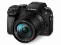

DMC-G7是松下标志性G系列的第6款产品，外形依旧是标志性的类单反设计，但DMC-G7要显得更时尚、精致。舒适且贴合手型的手柄让使用者有更佳的拍摄体验，而机顶与机背丰富的转盘与拨轮无不透露出操控上的专业感。松下DMC-G7的大部分性能继承自旗舰级的GH4，和DMC-GX8一样都具备出色的4K录制能力，支持3840×2160 30/25/24/20fps 4K分辨率视频短片的拍摄和三种模式的4K照片功能，同时也为4K拍摄提供了更为亲民的解决方案。
松下性价比很高、很有代表性的一款机子，想入松下门、体验松下M43技术的首选
1、外形有点仿隔壁厂旗舰，手感那是一流。 2、操控也很舒服，快捷键多得用不完。 3、4K、后对焦、DFD等等，除了防抖，松下的技术基本上都集齐了 4、电池容量大，适合长时间使用 5、自上市以来价格一直很好，性价比超过入门的GF线
1、不知道是我这台的毛病还是本来就这样，CMOS表现令人失望。 具体表现：解像力不如隔壁厂老机E-P5，有肉眼可见差距；动态范围太次，ACR里随便拉拉高光阴影就偏色；同样是拓展出的ISO100，丢了高光动态噪点却比隔壁厂多 2、没有机身防抖还是不方便，尤其是习惯了隔壁家的五轴、本家的镜头防抖又拿不上台面 3、4K视频下对焦能力孱弱，这个是处理器能力所限，要等GH5才有希望改善 4、共振，老问题了，新品GX85才搞定。